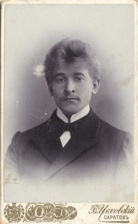
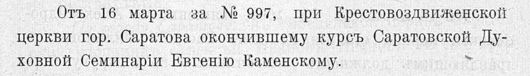
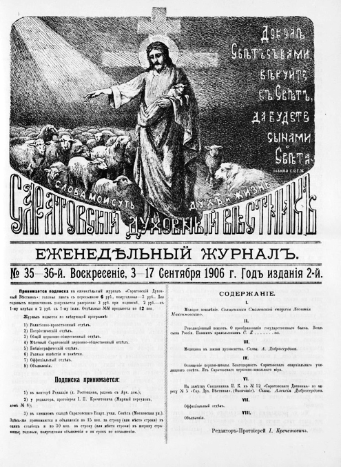

Глава III
Мой прадед Евгений: храм, хор и Шклово
Евгений Иванович Каменский родился 10 февраля 1880 года в селе Порзово Петровского уезда Саратовской губернии. Он был сыном священника Ивана Васильевича Каменского и Веры Дмитриевны Добролюбовой-Каменской. За его спиной уже стояли несколько поколений духовного служения. Его путь не был случайным: Петровское духовное училище, Саратовская духовная семинария, церковное пение, педагогическая работа, служение.
После окончания семинарии Евгений Иванович был учителем пения в Саратовском Мариинском приюте. Эта деталь особенно важна. До того, как стать сельским священником, он уже был связан с голосом, хором, обучением, детским учреждением. Музыка и образование входят в его биографию раньше, чем Шклово.

Мой прадед Евгений Иванович Каменский. Фото ориентировочно начало XX века.
В марте 1904 года он был определён псаломщиком к Крестовоздвиженской церкви города Саратова.



Фотография с видом Крестовоздвиженского монастыря, выполненная в нач. ХХ века. Приблизительная датировка: с 01.07.1900 г. По 01.07.1910 г. (https://sobory.ru/photo/517167)
А 23 августа 1906 года получил священническое место при Свято-Троицкой церкви села Шклово Аткарского уезда.
 |
 |
|---|

С этого момента начинается главная глава его жизни. Шклово становится для Евгения Ивановича не просто местом службы. Оно становится местом дела. Там он служит, учит, организует церковную жизнь, занимается хором, участвует в расширении и перестройке храма. Позднее именно с этим храмом будет связан один из самых важных документов всей книги — статья «Освящение храма», опубликованная в «Саратовских епархиальных ведомостях». 9 октября 1916 года в селе Шклово состоялось торжественное освящение перестроенного и расширенного приходского храма во имя Святой Троицы
 |
|
|---|


В этой дате есть особая драматургия. 1916 год. До революции остаётся совсем немного. Старая Россия ещё строит и освящает храмы. Священник ещё пишет в епархиальные ведомости. Приход ещё собирается на торжество. Хор ещё звучит. Община ещё верит в продолжение. Но за горизонтом уже стоит другой век. Именно поэтому статья об освящении храма в Шклово становится кульминацией дореволюционной части книги. Это не просто заметка о церковном событии. Это последний большой светлый документ перед разломом.
Евгений Иванович в этой истории — не только мой прадед. Он человек,
который строил пространство вокруг себя: храм, хор, школу, приходскую
общину.В нём сошлись сразу несколько линий. Каменские дали ему фамильный
ствол духовного служения. Добролюбовы — семинарскую и интеллектуальную
культуру.
Фисейские через Анну Константиновну — вторую духовную реку, связанную с
Ивановским и Иоанно-Воинской церковью. Если Павел Григорьевич открывает
подтверждённую линию Каменских, то Евгений Иванович становится её
вершиной перед катастрофой XX века.
После него история рода меняет тон. Начинается время, в котором служение станет опасной памятью.